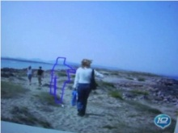
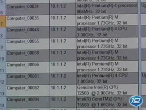

Channel 9 Blog for Tina Wood
Pranking Softies: The Faces of Microsoft campaign[MP4] [0:06:59] [2011/08/03] Microsoft has always had a history of pranks and well, sometimes you just need to play jokes on your colleagues. For this prank, Dan and I set up a fake photo shoot with the premise that they will be…
The Office Show: How to Design in Microsoft PowerPoint with Office 2010 [MP4] [0:10:42] [2010/06/10]
[MP4] [0:10:42] [2010/06/10] In this first-ever episode of “The Office Show,” you’ll find out how to make your PowerPoint presentations so exciting that nobody will ever sleep through one of your talks again. Microsoft design…
MMA - Mixed Martial Arts is the brand new title from EA Sports[MP4] [0:09:06] [2010/05/12]EA is coming out with a brand new Xbox 360 title called EA Sports MMA. MMA, or Mixed Martial Arts, is a sport that is becoming more and more popular. In this video, I talk to Randy Chase, who is one…
Office Casual: OneNote - An all too brief introduction[MP4] [0:02:23] [2010/05/12] OneNote has plenty of new features for Office 2010, but in this short video, Doug Thomas from Office Casual gives a simple overview of this program for gathering and sharing ideas; a scrapbook for…
Office Casual: OneNote - An all too brief introduction[MP4] [0:02:23] [2010/05/11]
OneNote has plenty of new features for Office 2010, but in this short video, Doug Thomas from
Office Casual gives a simple overview of this program for gathering and sharing ideas; a scrapbook for…
Interview with Design Director Cliff Bleszinski of Epic Games [MP4] [2010/05/07]Cliff Bleszinski is the Design Director at Epic Games. In this video, he talks about the success of the Unreal Engine and the tool set that allows devs to work smarter not harder. As outlined via the…
Office Casual - The Quick Access Toolbar[MP4] [0:02:33] [2010/05/07]In Office 2007 or Office 2010 you can place your favorite commands in the aptly named Quick Access Toolbar (QAT) to always have them at the ready regardless what tab or Ribbon you are working in. Doug…
Office Intervention: The Opera Episode - Part Two[MP4] [0:03:24] [2010/03/31]The Seattle Opera needs organizational help and our Office Intervention Team is there to help with SharePoint in hand. This is Part Two which helps the Seattle Opera implement SharePoint to become…
Office Intervention: The Opera Episode - Part One[MP4] [0:04:35] [2010/03/06]The Seattle Opera needs organizational help and our Office Intervention Team is there to help with SharePoint in hand. This is Part One which helps set up the story and talks about the issues the…
The History of Microsoft - 1985[MP4] [0:09:30] [2010/03/04] For Microsoft, 1985 brings the announcement of the release of Microsoft MacEnhancer expansion system, the Microsoft Mouse is quarantined in Canada and Microsoft celebrates its 10th Anniversary.…
The History of Microsoft - 1984[MP4] [0:04:12] [2010/03/03]For Microsoft, 1984 means a partnership with Apple, Microsoft Press Introduces its first two titles and we create a new Hardware and Peripherals Division dedicated to developing and marketing hardware…
The History of Microsoft - 1983[MP4] [0:03:54] [2010/02/24] For Microsoft, 1983 means the end of an era with the resignation of Paul Allen, the introduction of MS - DOS 2.0 and the formation of Microsoft Press, a trade-book publishing division specializing in…
The History of Microsoft - 1982[MP4] [0:06:14] [2010/02/16] For Microsoft, 1982 means a new Chief Operating Officer, a new logo and the very first in-house fax machine. Previous Episodes:The History of Microsoft - 1975The History of Microsoft - 1976The…
The History of Microsoft - 1981[MP4] [0:04:24] [2010/02/09] For Microsoft, 1981 means an entrance into the Operating Systems Business, we organize into a privately help organization and revenue jumps to over 17 million bucks. Previous Episodes:The History of…
The History of Microsoft - 1980[MP4] [0:04:20] [2010/02/06] For Microsoft, 1980 means a new decade and new technology. Microsoft introduces the Z-80 SoftCard, Steve Ballmer joins the company and we announce XENIX OS, a portable, UNIX-based operating system…
The History of Microsoft - 1979[MP4] [0:04:26] [2010/02/04]For Microsoft, 1979 is all about Basic when the M6800 version of Microsoft Basic is released, The 8080 version of Microsoft® Basic is the first microprocessor software product to win the ICP Million…
The History of Microsoft - 1978[MP4] [0:06:32] [2010/02/02] For Microsoft, 1978 begins with the announcement of the Microsoft COBOL-80, which conforms to the 1974 ANSI standards for 8080, Z80, and 8085 microprocessor systems. We establish our first…
The History of Microsoft - 1977[MP4] [0:05:01] [2010/02/02] For Microsoft, 1977 marks the beginning of an official partnership between Paul Allen and Bill Gates, we hire our first official employee and the FORTRAN-80, Microsoft's second language product…
The History of Microsoft - 1976[MP4] [0:04:11] [2010/01/30] For Microsoft, 1976 was the first year with an official name, it was the first time Bill Gates raised the issue of piracy and we hired our first full-time employee Marc McDonald. Previous The History…
The History of Microsoft - 1975 [MP4] [0:07:02] [2010/01/29]Thirty-four years ago, a nineteen year old kid and his twenty-two year old business partner sold their first program to a little computer company in Albuquerque, New Mexico. The program was called…
157 Power Point Templates [MP4] [0:01:28] [2010/01/28] At Office.com we have thousands of free templates. Here's a set of 157 PowerPoint templates professionally designed by an MVP for Office.com. Rich, concise, many with animation. Come see them all at…
Office Casual at CES: Why Video Rocks in PowerPoint 2010 [MP4] [0:01:59] [2010/01/22]On the road at CES and the buzz on Office 2010 is remarkable for PowerPoint 2010, especially the new video and image tools. You can find all of the Office Casual videos under the Office Casual tag on…
Office Casual at CES: How to see important stuff in Outlook 2010 [MP4] [0:01:39] [2010/01/22]You know how in Outlook when you get an attachment and you'd like to see it but to see it you'd have to open it so you don't open it? Problem solved with the preview function in Outlook 2010. You can…
Office Casual: How to play the game of Office with Ribbon Hero[WMV] [0:03:25] [2010/01/19]Now you can learn about using Word, Excel, and PowerPoint in a friendly and fun way: Ribbon Hero. Doug Thomas shows you how to play this game--from the folks at Office Labs--that teaches while you…
Office Casual: How to save time with Windows 7 [WMV] [0:03:18] [2010/01/16]
[WMV] [0:03:18] [2010/01/16]In this short video, Doug Thomas shows you a few ways he has saved time working with Windows 7, including new ways to search.
Harrison Clarity: Create a Network Diagram in Visio [MP4] [0:04:42] [2010/01/15]
[MP4] [0:04:42] [2010/01/15]A nervous client has a tight deadline. Network documentation has him all jumbled up. Good thing he came to the office of Harrision Clarity. Watch how Clarity uses Visio to put together a clear picture…
Harrison Clarity: Create a Web Site Map[WMV] [0:05:16] [2010/01/14]Harrison Clarity helps to set up a Web Site Map with a blue waitress. It's like Avatar meets Alice but with Visio and without Mel.
Office Casual: Why Monster's resume templates are easy[WMV] [0:03:38] [2010/01/13]Now you can use and submit a resume template designed by Monster.com without leaving your Word program. Doug Thomas shows you Monster's Easy Submit Resumes.
Harrison Clarity: Create an organization chart using Visio[MP4] [0:04:27] [2010/01/13]Harrison Clarity gets his first client in the new visualization business. The client has organization information in Excel and needs to turn it into a picture. Fortunately, this is quick work for…
Life at Microsoft - Episode 3 [MP4] [2009/12/10]
[MP4] [2009/12/10]Life at Microsoft: Episode OneLife at Microsoft: Episode Two In this episode we break down the truth behind our internal distribution lists, we take you to Bill Gates inbox, I show you our process of…
Life at Microsoft: Episode 3[MP4] [0:02:11] [2009/12/04]Life at Microsoft: Episode OneLife at Microsoft: Episode Two
In this episode we break down the truth behind our internal distribution lists, we take you to Bill Gates inbox, I show you our process…
Life at Microsoft - The Truth Revealed...again![MP4] [0:03:03] [2009/11/23]False rumors about life at Microsoft abound, like "drinking the juice" or sleeping at our desks; even that everybody watches Battlestar Galactica. Truth is: only most of us watch it. In a…
Life at Microsoft: The truth revealed...again! [MP4] [0:03:03] [2009/11/06]False rumors about life at Microsoft abound, like "drinking the juice" or sleeping at our desks; even that everybody watches
Battlestar Galactica. Truth is: only most of us watch it. In a…
Inside Xbox: Forza 3 Dyno Session and Interview with Content Manager John Wendl[MP4] [0:15:02] [2009/09/04]There's no fun in "All work and no play", which is exactly why most of us own
Xbox 360's. When the Xbox was released in 2001 in North America there was a lot of skepticism about the…
Silverlight 3 and Expression 3 Launch Video - well sort of. :) [MP4] [0:01:56] [2009/07/10]Why is Dan Fernandez crawling around on a concrete floor with a blonde wig while White Snake plays in the background? That's a great question and I wish I had a logical answer but I don't so I will…
Office Casual: Business Cards in 90 seconds[WMV] [0:04:42] [2009/06/11]Doug Thomas is back with another edition of Office Casual and this time he shows us how to make our own business cards in 90 seconds or less. Well, he at least attempts to show us how to make…
Microsoft Trivia - Gates: Easy[MP4] [2009/05/20]Okay, I love trivia. I'm a bit of a sucker for it. I don't like researching the trivia and creating the trivia nearly as much as I like trying to guess the answers to the trivia. Anyway, I've gone…
Office Intervention - Power Point Make-Over[WMV] [0:04:26] [2009/05/08]Have you ever tried to build a Power Point Deck and at the beginning you were really, really excited because you knew that your presentation would just mesmorize your audience but then when you…
Office Casual - How to get your resume noticed[WMV] [0:02:24] [2009/04/29]Doug Thomas, our resident host of Office Casual is going to give you tips on how to get your resume noticed. But we aren't talking fonts or sizes. No my friend Doug takes this one step further and…
Microsoft Trivia - Sales - Medium [MP4] [2009/04/21]
[MP4] [2009/04/21]Okay, I love trivia. I'm a bit of a sucker for it. I don't like researching the trivia and creating the trivia nearly as much as I like trying to guess the answers to the trivia. Anyway, I've gone…
Office Casual - How to seperate work and home on your phone[WMV] [0:02:40] [2009/04/20]Doug Thomas from Office Casual is back in action with some tips on "How to seperate work and home on your phone". This will work if your phone is a windows mobile device and your company…
Office Casual - How to work with the ribbon[WMV] [0:03:46] [2009/04/15] Doug Thomas from the Office team is at it again. This time in his Office Casual series he explains how to work with ribbon. Did you know that the interface used in Office programs before 2007 were…
Office Intervention - I need a job[WMV] [0:04:58] [2009/04/09]Okay people, times are tough. The economy is killing, layoffs are all too common and Starbucks is closing stores and that's bad news for all latte lovers. In an attempt to help out those in need we…
What IM Status Really Means [WMV] [0:02:00] [2009/02/07]
[WMV] [0:02:00] [2009/02/07]Doug Thomas, the host of Office Casualfrom the Office Online team brings us up to date on what those IM status icons really mean. You know, the icons on communicator or live meeting that tell you if…
Free Office Template helps you customize your own calendar[WMV] [0:03:24] [2009/01/31]How you ask? Well that is where Doug Thomas comes in. Doug is the host of Office Casual , a series of videos from Office Online that bring you tips and tricks to help you save money and time. Here,…
Want to work at Microsoft?[WMV] [0:02:55] [2009/01/13]Microsoft has launched a new career site for those interested in working for the company. You can browse jobs by country or region and interests. A few of us here at Microsoft were profiled to help…
Sarah Lane - Raw and Uncut[WMV] [0:08:28] [2008/12/02]Or Raw and slightly edited. I took a trip to SF recently to spend some time with my pal Sarah Lane from Revision 3. Sarah and I used to work together back in LA at G4techtv and she recently hosted…
Silverlight Application tackles the Medical Field [WMV] [0:07:50] [2008/11/20]Adam Kinney stops by the Channel 10 studio to show us a new silverlight application for the medical field. Out with the note-pads and in with the highly technically advanced uber cool not as many…
Digital Media Boot Camp[WMV] [0:04:09] [2008/10/27]Finally a summer camp for tech kids! The three week digital media boot camp took place at the Great Northern Way Campus in Vancouver this summer and these kids had a blast. I talk to Magy Seif…
RoboChamps Update![WMV] [0:02:03] [2008/10/15] Today, Microsoft officially launched the Urban Challenge, sponsored by KIA Motors. KIA's sponsorship has taken RoboChamps to a brand new level - both in realism and in terms of prizes. KIA has been…
PDC 2008 is coming...and I can't wait! [WMV] [0:03:57] [2008/10/04] Microsoft’s Professional Developers Conference 2008 is hitting the Los Angeles scene late October (27-30) and we got our best ad-agency guys and gals together to figure out how best to get the word…
Askthebrain.net Creator's Exclusive Interview[WMV] [0:02:13] [2008/10/02]Get the nitty-gritty details from the genius behind askthebrain.net as to why so bitter and what will be done to resolve the bitterness next month in L.A.
Daylines Exclusive Interview with the Brain in the Jar[WMV] [0:03:34] [2008/09/24] Learn where the Brain has been since the last PDC. I discover what the brain likes to do when not developing software; why a jar and if it is a mascot?
Microsoft's Holiday Preview - Zune[WMV] [0:04:44] [2008/09/18]Happy Holiday's Zune Lovers! Zune is a favorite portable device for many and Katy Asher drops by to talk all things Zune and what we have to look forward to this Holiday Season. There's a new Blue…
Microsoft's Holiday Preview - Platinum Gifts and Hot Gifts Under $100[WMV] [0:01:59] [2008/09/17]Happy Holidays! I take you into the future with a plethora of products that Microsoft will be releasing this Holiday Season. These are considered our Platinum gifts like the Xbox 360 Elite, The 120…
Microsoft's Holiday Preview - The Overview![WMV] [0:04:33] [2008/09/16]Happy Holidays and welcome to the Microsoft Holiday Preview. We have games, music, phones and computers. To get even deeper we show off products like the SONY VAIO TZ Notebook, Dell XPS One, Samsung…
Microsoft's Holiday Preview - Xbox 360[WMV] [0:02:24] [2008/09/11] Happy Holiday's Gamers! Yes, don't let the 80 degrees and sunny skies throw you off. Jen Puzio and I talk about what you can look forward to this holiday season from the Xbox team. Including the…
Office Labs: Chart Advisor[WMV] [0:02:25] [2008/08/28] Chart Advisor is a prototype that provides an alternate approach for creating charts in Excel 2007. This add-in uses an advanced rules engine to scan your data and, based on predefined rules,…
Office Labs: Email Prioritizer[WMV] [0:00:50] [2008/08/21] Email Prioritizer is a plug-in for Microsoft Office Outlook 2007 (running on Exchange Server) that helps you manage email overload. This concept test provides a “do not disturb” button that…
Office Labs: Speed Launch[WMV] [0:03:06] [2008/08/19]This is the first community prototype from Office Labs. Community prototypes are projects Microsoft employees work on in their spare time. Speed Launch's goal is to let you get to the stuff you use…
Watch the Olympics Live now at NBCOlympics.com [WMV] [0:08:18] [2008/08/06]Who needs DVR when you can watch the 2008 Summer Olympics Live at NBCOlympics.com. With over 2200 hours of live Olympic footage and more feature and profile pieces than you know what to do…
Deep Zooming with HardRock.com [WMV] [0:07:41] [2008/08/06]Adam Kinney stops by the Channel 10 Studios and takes us through the HardRock.com memorabilia site. It's built with Silverlight and we've seem glimpses before but now we're bringing you the whole…
RoboChamps Sumo Challenge[WMV] [0:05:28] [2008/08/01]Welcome to Robochamps...where you have an opportunity to wage war in a simulated robotics competition that will cost you nothing. Robots aren't just for rich people anymore. Using Visual Studio,…
LineRider.com....so much fun[WMV] [0:05:41] [2008/07/29]Boy grabs sled. Boy rides sled. A simple concept yields endless fun and the latest Internet Phenomenon is born! In Line Rider the player draws their own landscape with a simple pencil tool creating as…
A candid chat with the Mobile Search Team[WMV] [0:08:54] [2008/07/24]Okay, let's face it...we are all addicted to our Mobile devices. Whether we're chatting, texting, browsing or searching we can't live without our favorite portable friends. I spent some time…
High Tech Hiking in South America [WMV] [0:13:14] [2008/07/22]Brian Keller and Mike Iem are avid hikers and just happen to be Microsoft employees. They are heading out on a three week hike to South America in a few weeks and stopped by the Channel 10 Studios to…
Channel 10 Round-up: Halocast[WMV] [0:06:35] [2008/07/11]I thought I would give an update with what's happening in the world of Channel 10 . I make my way through the channel 10 site and talk about specific text posts or videos we have done in the past…
[Schizoid-Available-on-Xbox-Live-Arcade-today]
[Peggle-From-the-makers-of-Bejeweled]
Search Share: A new facebook application[WMV] [0:06:43] [2008/07/08]Search Share lets you find all kinds of videos, images and other information online and then share it very easily with friends. But Search Share goes beyond typical web search - you see visual…
Zine: A new facebook application[WMV] [0:06:12] [2008/07/03]Zine is your own online magaZINE of articles and videos that you personalize to include the topics you care about. Zine makes it easy to dig deeper into stories that interest you, and to share stories…
A look back at my life with Bill Gates[WMV] [0:02:55] [2008/07/01]So my boss, Bill Gates is officially gone. Not like, gone, gone. But he won't be in the office everyday anymore. He has taken on another ambitious and important project and has chosen to spend more…
[Rock-Band-2]
[New-Saints-Row-2-Screenshot]
Composer, songwriter, sound designer, producer, musical director, and performer: PatrickPennefather[WMV] [0:08:08] [2008/06/27]Composer, songwriter, sound designer, producer, musical director, and performer in almost any genre of music imaginable, for over two hundred live and digital media productions in the past 20 years,…
[Limited-Galactic-Edition-for-Spore]
[NBA-Live-Chooses-Cover-Athlete]
Happy Tree Friends: False Alarm available June 25th [WMV] [0:01:10] [2008/06/24]Sega brings us Happy Tree Friends: False Alarm which is available for download on June 25th for PC and Xbox LIVE Arcade. The cute, cuddly Happy Tree Friends meet with one horrible, twisted disaster…
[X-Blades-Anime-Artwork-Contest]
[Guitar-Hero-III-Coldplay-Track-Pack-Available-Today]
[Deer-Hunter-Tournament-on-PC-and-Xbox-LIVE]
Carbon Grove: Green on-line campaign[WMV] [0:07:39] [2008/06/18] On Earth Day, Microsoft Window’s Internet Explorer launched Carbon Grove, its first green on-line campaign designed to mobilize internet users to push for aggressive reductions in their carbon…
[Fable-II-New-Screenshot]
"Fracture" for The Xbox 360[WMV] [0:02:06] [2008/06/11]If you haven't had a chance to check out the Trailor for "Fracture" yet...it's coming out this October on the Xbox 360 and looks well...I'll let you decide. We're starting to see a lot more…
Making of "The Incredible Hulk" Xbox 360 Game[MP4] [0:04:01] [2008/06/10]Some of you may have recently gotten your hands on Sega's new "The Incredible Hulk" game. And may be asking who are the voices behind the green giant and his fair lady? Never fear, the…
[Video-Games-Live-announces-50-new-shows]
Live Search - Cashback: What is it?[WMV] [0:09:03] [2008/06/06] Many of you may have heard Bill Gates announcing the new Live Search cashback program or even received the email in your hotmail inbox. Well, I spent some time chatting with Brad Goldberg from the…
Creating virtual databases[WMV] [2008/06/04]I took a trip to the GNWC Master of Digital Media Program last week and had an opportunity to spend some time chatting with a few of the students in the masters program about this cutting edge idea. …
[Aces-of-the-Galaxy-and-Roogoo-coming-to-Xbox-LIVE-Arcade-tomorrow]
MIX 08 - The Wrap Up Video[WMV] [0:02:58] [2008/05/30]So if you're into developing and designing cool web-sites then the annual MIX event in Las Vegas is where you want to be. MIX 08 was stellar as Guy Kawasaki and Steve Ballmer played hardball, Ray…
Softkinetic - Changing the way you play games[WMV] [2008/05/28] Softkinetic is the leading provider of natural interfaces that transform the way people interact with the digital world. They enable fully immersive, transparent and intuitive user experiences by…
Live Search for Mobile: Part Two[WMV] [0:06:14] [2008/05/20] In part two of "Live Search for Mobile" I spend some time exploring Live Search with Andrew Bell. Live Search for Mobile has just released the latest updates to our browser-based mobile…
Live Search for Mobile[WMV] [0:08:36] [2008/05/19] I spend some time with Gary Voronel from the Microsoft Mobile Search Group. He shows off Live Search for Mobile. Live Search for mobile is your essential mobile companion – search for businesses,…
Xbox 360 Update with Aaron Greenberg[WMV] [0:15:00] [2008/05/16]I snagged Aaron Greenberg fresh off the plane from San Francisco where Microsoft released never before seen footage and talked all things sequel with Gears of War, Ninja Gaiden, Viva Pinata, Too Human…
[2008-Xbox-360-Line-up-Revealed]
Windows Live Messenger for Facebook[WMV] [0:05:18] [2008/05/13]Did you know you can use Windows Live Messenger and Facebook to connect with your friends, including showing your online status and allow people to contact you from your Facebook profile?I sat down…
[Zune-25-Spring-Update]
Zune Spring Update 2.5 - The Video [WMV] [0:15:54] [2008/05/07]
[WMV] [0:15:54] [2008/05/07]Terry Farrell from the Zune team stopped by the Channel 10 studios today to give us a walk through of exactly the changes you can expect in the new Zune Update. We've brought you screenshots and cute…
Zune Guts[WMV] [0:03:10] [2008/05/06]At Zune Blogger Day today we got an inside peek inside the Zune and I mean an inside peek. We were there to celebrate the Zune Spring Update Version 2.5 but the Zune team got a bit creative and threw…
[Zune-Spring-Update-Version-25-the-info]
Popfly: On Set with Halo Master Chief[WMV] [0:00:34] [2008/05/02]We all know the success that Master Chief has had with Halo but sometimes you just need a change. I mean, saving the Earth and all is cool but what about just a simple life. One that doesn't involve…
Popfly: Auditioning for the role of PUNCHOUT boxer[WMV] [0:01:36] [2008/05/02]Okay, so I don't know if you have ever been on a casting call but the idea is that you go on an audition for a role that you are "right" for. Check out the cast of freaks that showed up for…
Popfly: On Set with the Tetris Pieces[WMV] [0:00:50] [2008/05/02]Working with "real" tetris pieces just sucks. I'm serious. First off, I ordered four pieces but apparantely the square and T piece were on strike because of the high gas prices. I know,…
Popfly: On Set with Mario[WMV] [2008/05/02]Oh Mario...what a sensitive little guy. We hired Mario because of his experience. He's been a Doctor, he's been Super...but what we didn't know is that he's tired of it all. His agent mentioned…
Popfly: On Set for the Gangsta Game[WMV] [0:00:46] [2008/05/02]Working with thugs isn't all it's cracked up to be. And don't get me started on female pimps, they're the worst. We hired a thug and pimp to help create our gangsta game and well, they were just…
Popfly: On Set with Frogger[WMV] [0:00:31] [2008/05/02]I'm sure you've all heard by now that Frogger has been on a downward spiral since he was booted as sexiest frog alive by Kermit. He started drinking, cursing and ran off to Vegas for a quickie…
Popfly: On the Set of Pong[WMV] [0:00:44] [2008/05/02]People make fun of Pong all the time. Oh, it's just two paddles and a ball - it's boring, you don't kill anybody and there's no animated hero that is preparing to save the world. Well, Pong is…
Making Games...before Popfly Game Creator[WMV] [0:05:37] [2008/05/02]The Popfly Game Creator offers a fun and easy way to create and share personalized games. Creating a game with Popfly is as simple as selecting actors, specifying a scene, and then defining behaviors…
MSN Video/Soapbox Vista Sidebar Gadget now available[WMV] [0:06:46] [2008/05/02] David Cronshaw and I chat about the new MSN Video/Soapbox Vista Sidebar Gadget which is now available for download. The official MSN Video/Soapbox Vista Sidebar Gadget is now available for…
Office Labs: Project "InkSeine"[WMV] [0:03:44] [2008/04/29] The goal of the InkSeine project is to completely rethink the user interface for tablet computers. Some people have described InkSeine as "Windows Journal on steroids." But InkSeine goes…
Office Labs: Project "Community Clips" [WMV] [0:03:05] [2008/04/28]Community Clips is a portal for viewing, sharing, and discussing informal "how-to" videos (screencasts) on Microsoft Office products. It also includes a client application for easy recording…
RoboChamps: My robot is bigger than your robot[WMV] [0:10:56] [2008/04/24]Welcome to Robochamps...where you have an opportunity to wage war in a simulated robotics competition that will cost you nothing. Robots aren't just for rich people anymore. Using Visual Studio,…
PeopleVancouver.com[WMV] [0:03:37] [2008/04/17]Okay, sometimes we just need to share the love. I met a student named Nadia Aly at the GNWC in Vancouver a few weeks ago. She is working on her masters in digital media. She was half of the duo…
"Crossing" - an animated piece nominated for a Webby Award[WMV] [0:01:59] [2008/04/11]I sat down with McKane Lee from the Masters of Digital Media program at the Great Northern Way Campus and he gave us a quick lesson on rendering using a short film he and his team produced titled…
Rendering - What exactly is it?[WMV] [0:03:09] [2008/04/09]Rendering is the process of generating an image from a model, by means of computer programs. The model is a description of three dimensional objects in a strictly defined language or data structure.…
Iron Man for the Xbox 360 - May 2nd [WMV] [0:03:37] [2008/04/08] SEGA is excited to present the first Behind-the-Scenes video from the upcoming blockbuster video game - Iron Man. Focused on the origin of the game, this new video features key members of the Secret…
Second Life - How to get started[WMV] [0:01:25] [2008/04/04]As most of you know Second Life is an online virtual 3D world that anybody can join. It's even got its own CSI: NY Flickr group, you can hang on the Titanic and of course buy and sell your Linden…
Happy Tree Friends: False Alarm - Sneak Peek[WMV] [0:00:45] [2008/04/03]SEGA of America is releasing all new gameplay from the upcoming downloadable game Happy Tree Friends:False Alarm and some hilarious behind-the-scenes stories of how the devilishly fun Happy Tree…
Blended Reality: A look at bringing Second Life into Real Life[WMV] [0:03:10] [2008/04/03]What's it like to share a real-life stage with your Second Life avatar? We've seen the use of a green screen in real life for quite some time now. Newscaster pretends to be stuck in the middle of a…
Silverlight Rehab - You're not alone[WMV] [0:05:37] [2008/03/31]Trying Silverlight can lead to an addiction. We know this. But you're not alone. Whether you're a Developer, Designer or just a web junkie...there's people out there just like you. Don't be afraid…
How to: Shoot and Edit a Time-Lapse Video[WMV] [0:00:37] [2008/03/28]We see it all the time. The passing of the night sky in an episode of "Survivor". The quick steps of pedestrians making their way through a crowded street corner. I've been asked by a few…
How-To: The Creation of a 3D Video[WMV] [0:06:49] [2008/03/27]I stopped by Worktank again last week to take a look at a 3D video with some stellar animation they recently created for Microsoft. I sat down with Scott Douwes a Motion Graphics Artist who gave me…
TechFest 2008: Reliable Wireless Connectivity on the Go[WMV] [0:06:08] [2008/03/21]Many people want to stay connected while traveling and commuting, which is driving the demand for network access from moving vehicles. But the reliability and performance of such connectivity today is…
TechFest 2008: Mobile-Systems Distributed Operation for Sensing[WMV] [0:03:17] [2008/03/21] While mobile phones quickly are becoming the primary computing platform for many users, these devices are programmed and used in a manner akin to miniature PCs, each in a silo and interacting…
TechFest 2008: New Search UIs for Collaboration and Persistence[WMV] [0:04:15] [2008/03/20]SearchBar is a new type of browser history that supports complex Web investigations by assisting with task resumption and information re-finding. SearchBar accomplishes these goals by proactively and…
TechFest 2008: Video Collage[WMV] [0:02:31] [2008/03/15]Photo Collages? So old school...it's time to check out Video Collage.Video Collage is a compact representation of video. It uses one automatically synthesized image to summarize the content of a…
TechFest 2008: Real Time Rendering of Smoke Animation[WMV] [0:02:30] [2008/03/14]One would think that Real Time Rendering of Smoke Animation in this technological era would be a cake walk. Well, it isn't and here's why: Rendering of smoke presents a challenging problem in…
TechFest 2008: World Wide Telescope[WMV] [0:11:38] [2008/03/12]The WorldWide Telescope (WWT) is a rich, Web 2.0 visualization environment that functions as a virtual telescope, bringing together imagery from the best ground- and space-based telescopes in the…
TechFest 2008: BLEWS - What the Blogosphere Tells You About News[WMV] [0:03:35] [2008/03/11]What a great time for BLEWS...while blogging about politics is at an all-time high, BLEWS simplifies the debates for you...here's what I found out at TechFest 2008. While typical news-aggregation…
TechFest 2008: In-Depth Image Editing[WMV] [0:04:39] [2008/03/09]Behold Photoshop users as In-Depth Image Editing is coming to a computer near you. In-Depth Image Editing takes the idea of Clip Art to a whole different level. I stopped by for a demo on how to…
TechFest 2008: Lucid Touch[WMV] [0:06:40] [2008/03/07]TechFest 2008 got under way this week on the Microsoft campus and one of the most popular booths at the event was Lucid Touch. Patrick Baudisch with Microsoft research gives us a demo but I'll give…
Silverlight on your Mobile Phones - Demo + Q&A![WMV] [0:05:22] [2008/03/05]That's right party people...Silverlight on your mobile devices. Amit Chopra from the Mobile Developer Group stops by the Channel 10 studios to talk about features and the future. He shows us a…
A great video blogger...Wine Library TV[WMV] [0:09:30] [2008/03/05]Every once in a while you come across a video blogger that really catches your attention. A collegue of mine Loke Uei Tan invited wine video blogger Gary Vaynerchuk to Redmond to attend an MS Mobile…
How To - The creation of an Imagine Cup video[WMV] [0:09:28] [2008/03/04]I stopped by Worktank last week in downtown Seattle to check out the making of a really interesting Imagine Cup video. I personally have down the basics of editing but animating, not so much. Rick…
Get a Masters Degree in Digital Media[WMV] [0:03:55] [2008/02/23]I took a little trip to Vancouver this past weekend and spoke with Gerri Sinclair, the executive director at The Great Northern Way Campus. The Great Northern Way Campus in Vancouver offers an…
Why your Xbox games look so good[MP4] [0:06:42] [2008/02/22] I spoke with Anthony Brown from Seven Group Digital Media this weekend at the Elan Awards in Vancouver and he gave us a peek behind video game development that you may not have seen before. Long…
Life At Microsoft - The Truth Revealed[MP4] [0:04:19] [2008/02/14] People often stop me in the streets to ask "Hey Tina, what's life "really" like at Microsoft? Sometimes I can't even walk outside my house without somebody standing there with a giant…
TN Games - Gaming Vest and Helmet[WMV] [0:04:55] [2008/02/09]I dropped by TN Games last week to check our their TN Games' 3rd Space™ Vest. The vest allows you to feel the impact of punches, kicks, bullets and blasts that happen to your character in the game.…
[Addicted-to-Video-Games-For-boys-onlyhmmm]
Eye-Fi Wireless Memory Card[WMV] [0:04:35] [2008/02/01]The Eye-Fi Card is a wireless memory card. It automatically uploads pictures from your digital camera to your PC or Mac and to your favorite photo sharing, printing, blogging or social networking…
Dial Keys Gen 2 - FREE beta[WMV] [0:07:32] [2008/01/29]DialKeys Gen2 provides Windows XP and Windows Vista touch, thumb and pen devices with an interface for text input, 2 clicks email, Geo Tagged pictures snapping, instant access to location services,…
Zumobi - access and share web-based content on your mobile phone[WMV] [0:07:39] [2008/01/23]I did an interview yesterday with a few of the peeps from Zumobi. When I say peeps I mean Beth Goza and Sue Schmitz. Does anybody use the word peeps anymore? Anyway, in case you aren't familiar…
[Download-and-Vote-for-your-favorite-Video-Game]
[Microsoft-Office-for-Mac-2008]
[The-Voice-behind-Halos-Guilty-Spark]
[Microsoft-brings-Ads-to-shopping-carts]
[Politics-and-Blogging-Does-it-matter]
Show Us Your Home: Hakan Olsson Edition[WMV] [0:15:54] [2008/01/07]In an attempt to rip off cribs we bring you an episode of "Show me your house". Instead of showing you what's in Akon's refrigerator we barge into (not really, we're invited) the homes of…
Windows Live Search [WMV] [0:15:27] [2007/08/15]
[WMV] [0:15:27] [2007/08/15]Laura Foy and Sebastian Gard stand and chat all things Windows Live Search. Sebastian takes us to live.com to get all the info. Sebastian being a Boston fan shows us some relevant information on the…
Windows Live Spaces [WMV] [0:15:10] [2007/08/15]
[WMV] [0:15:10] [2007/08/15]Catherine Heller and Rob Dolin give us the skinny on Windows Live Spaces. We have lots of new stuff here. Brand new homepage, updated navigation and "What's New" is huge for this service. …
Gamerscore Podcast Episode Number Twenty Eight [WMV] [0:11:47] [2007/08/15]
[WMV] [0:11:47] [2007/08/15]Chris Paladino, Tony Hynes, Michael Wolf and John Porcaro talk laptop stickers. Chris has been hanging with "The Bigs", Tony has been kicking it with "Surf's Up" and…
Windows Live Messenger [WMV] [0:17:40] [2007/08/15]
[WMV] [0:17:40] [2007/08/15]Catherine Heller and Mike Bramlage give us the latest on what's happening with Windows Live Messenger. It's all about the contact list with presence. Presence is an individuals personal status. Do…
Windows Live SkyDrive [WMV] [0:07:11] [2007/08/14]
[WMV] [0:07:11] [2007/08/14]Jim Cauthorn and Douglas Pearce give us the inside on what's happening in the world of Windows Live SkyDrive. Windows Live SkyDrive is on online storage service. It's fantastic because you can gain…
Live Search Maps Integration [WMV] [0:11:57] [2007/08/10]
[WMV] [0:11:57] [2007/08/10]So yesterday Catherine Heller and Chris Pendleton brought you the basics of Live Search Maps. Today is all about the integration. How does Live Search Maps work with other services in the Live…
Live Search Maps with Chris Pendleton [WMV] [0:23:54] [2007/08/10]
[WMV] [0:23:54] [2007/08/10]Catherine Heller sits down with Chris Pendleton, he's the virtual earth technical evangelist here at Microsoft who talks about Live Search Maps. It's an integration of local listings for finding…
What is Windows Live? [WMV] [0:06:58] [2007/08/09]
[WMV] [0:06:58] [2007/08/09]Catherine Heller is a technical evangelist for Windows Live. Windows Live is a collection of end user offerings. We have offerings you can use from a browser or services you may use from a mobile…
The Video Puzzler and brightcove: Silverlight 1.0 demos [WMV] [0:03:05] [2007/08/08]
[WMV] [0:03:05] [2007/08/08]First off, I want to thank Ernie Booth for doing a rocking job on Channel 10 for us. Not just with the Silverlight demos but behind the scenes as well. He's been around since the birth of Channel…
Silverlight 1.0 Burton Demo [WMV] [0:02:41] [2007/08/06]
[WMV] [0:02:41] [2007/08/06]Ernie Booth shows us a demo website for Burton, the popular snowboarding company. It's an interactive way to actually show the items you want to buy in action as opposed to a still image. It's all…
Silverlight and its Top Banana [WMV] [0:04:27] [2007/08/04]
[WMV] [0:04:27] [2007/08/04]Ernie Booth knows how to bring it Silverlight style. Here, he shows off a demo called "Top Banana". For those of you interested in making movies or editing. This demo is right up your…
Silverlight takes on your HD experience [WMV] [0:02:51] [2007/08/03]
[WMV] [0:02:51] [2007/08/03]Ernie Booth stops by to show off some Silverlight version one stuff. Silverlight is a cross-platform, cross-browser plug in slated to come out some time this summer. We're going to take a look at…
Vista Ready Boost [WMV] [0:05:24] [2007/07/31]
[WMV] [0:05:24] [2007/07/31]Tim Sneath our resident group manager for client platforms sits or stands with us to give us the details on Vista Ready Boost. Tim brings in an ancient pc that was running Windows 2000 to show you…
Gamerscore Blogcast Episode 26! Or is it?[WMV] [0:11:04] [2007/07/28]Chris Paladino, John Porcaro and Tony Hynes sit down to chat all things Xbox. They chat about what's happening this week. Chris and Major Nelson are heading down to this years Comic-Con. They will…
Microsoft Popfly [WMV] [0:08:16] [2007/07/27]
[WMV] [0:08:16] [2007/07/27]I sit down with Dan Fernandez and he takes us through Popfly. Popfly is about building content without having to write code. In just a couple of seconds you can snap things together like gadgets and…
Microsoft Silverlight - Chess [WMV] [0:03:05] [2007/07/25]
[WMV] [0:03:05] [2007/07/25]Our good friend here at Channel 10 Laurence Moroney takes us through a Microsoft Silverlight demo called Silverlight Chess. Laurence Moroney was just on channel 10 giving us a nice little demo of…
Microsoft's Home Office Makeover - You just might win [WMV] [0:03:37] [2007/07/21]
[WMV] [0:03:37] [2007/07/21]...if you sent in your submission in time of course. Microsoft Office recently got a makeover, so the Office team is offering an a chance to win a $25,000 home office makeover. HGTV's Vern Yip will…
Windows Live Folders [WMV] [0:03:49] [2007/07/20]
[WMV] [0:03:49] [2007/07/20]I sit down with Jason Moore and Douglas Pearce from the Windows Live Folders team to get an overview of this really great service. Windows Live Folders allows you to share files with your friends or…
[Announcing-FamilyShow-20]
Microsoft Silverlight - Airlines [WMV] [0:02:40] [2007/07/17]
[WMV] [0:02:40] [2007/07/17]Our good friend here at Channel 10 Laurence Moroney takes us through a Microsoft Silverlight demo called Silverlight Airlines. It helps improve the booking experience when you go to book a flight. …
Xbox Podcast - Episode Twenty Five [WMV] [0:11:36] [2007/07/11]
[WMV] [0:11:36] [2007/07/11]Looks like all the Xbox news is starting to roll through thanks to the launch of this years E3. The gamerscore blog guys sat down with us as they prepared for this massive gaming event. They talk…
Windows Vista Hardware Assessment Tool 2.0[WMV] [0:05:54] [2007/07/11]Windows Vista Hardware Assessment Tool 2.0 allows you to see how ready your machines are for a Windows Vista Upgrade. Many people assume they don't have enough memory or hard drive space to run…
Ms Archives: A slice of Microsoft History [WMV] [0:11:11] [2007/07/10]
[WMV] [0:11:11] [2007/07/10]Laura takes us into the MS Archives which is where they house all things Microsoft, from the very beginning of the company to current products. Like a modern-day ark, two of everything are stored here…
[Virtua-Fighter-5-for-the-Xbox-360-to-feature-online-versus-mode]
[Microsoft-Teams-with-Amazon-for-High-Def-Indi-Films]
Xbox Podcast - Episode Twenty-Four [MP3] [0:12:21] [2007/07/03]
[MP3] [0:12:21] [2007/07/03]The gamerscore blog guys chat it up again this week. With what's happening in the land of xbox. Lots of games to talk about like Shadowrun of course which is still being pretty highly played. They…
[Microsofts-Unlimited-Potential-program-lands-in-India]
Behringer rocks it out for channel 10 [WMV] [0:03:44] [2007/06/28]
[WMV] [0:03:44] [2007/06/28]So you want to be a rockstar? Well, Behringer...a global M.I. audio company wants to help you make that happen. They make audio products for just about everybody. From consumers to professional…
[Top-15-games-of-all-time-MSN-Games-style]
Maker Faire 2007: Drum Machine [WMV] [0:01:28] [2007/06/26]
[WMV] [0:01:28] [2007/06/26]Meet Tony from San Francisco state. He built a drum machine that takes a midi signal from a midi device that goes to another device which processes the midi signal. Got it? Yea, better to just…
Xbox Team podcast - Episode 23 [WMV] [0:08:13] [2007/06/22]
[WMV] [0:08:13] [2007/06/22]Chris, Michael, Tony and John chat what they're playing this week. Looks like Chris has a small addiction to Shadowrun while John seems to be getting some Mrs. Pac-Man love. John is also giving you…
Vampire Rain - Xbox 360 walk-thru [WMV] [0:09:06] [2007/06/22]
[WMV] [0:09:06] [2007/06/22] Duane and Peter from the Xbox department sit down with me for another game walk-thru. This time we're chatting Vampire Rain. Here are the game details:Every year more and more people have gone…
[Warriors-Orochi-coming-to-the-Xbox-360-this-September]
Podcast with the Xbox Team - Episode 21 [WMV] [0:08:52] [2007/06/20]
[WMV] [0:08:52] [2007/06/20]It's time for this week's podcast with the Xbox team. This is the gang from Gamerscore blog. They talk about Shadowrun, Surf's Up, Forza 2 Motorsport, Sam and Max, Pac-Man and Guitar Hero II. They…
Acme Theatre in Los Angeles goes global via the internet[WMV] [0:10:26] [2007/06/19]Acme Theatre in Los Angeles, California is a world famous comedy stage. They are also on the forefront of technology. They are going to have what they call a world stage, so all of their shows will…
Happy Father's Day! Featuring gaming Dad Duncan Mackenzie [WMV] [0:08:09] [2007/06/17]
[WMV] [0:08:09] [2007/06/17]So you all know Duncan Mackenzie right? He's one of our Devs here for Channel 10 and he is also an avid gamer. I've had my head blown off quite a few times by him in Halo. Not pretty. And he's the…
Project Sylpheed game walk thru for the Xbox 360 [WMV] [2007/06/14]
[WMV] [2007/06/14] Microsoft and Square Enix bring you the arcade classic and Xbox 360 exclusive "Project Sylpheed". Here are some of the facts:The newest iteration of the “Silpheed” franchise morphs the…
Tenchu Z - Game walk thru courtesy of the Xbox 360 team [WMV] [0:13:32] [2007/06/12]
[WMV] [0:13:32] [2007/06/12]This is the latest installment in the "Tenchu" franchise and it's an exclusive Xbox 360 title. Duane Colbert and Peter Zyniewicz take us on a game walk thru. Here's more info from the Xbox…
HangGlider Simulator: Maker Fair 2007 [WMV] [0:01:25] [2007/06/12]
[WMV] [0:01:25] [2007/06/12]Okay Maker Faire 2007 was quite an event this year. I met Sam Thompson who built a HangGlider simulator with his Dad. Hey, some people go fishing with their dad. Others build simulators using…
The driver behind Forza 2 [WMV] [0:10:49] [2007/06/08]
[WMV] [0:10:49] [2007/06/08]Recently there was a photo floating around of a triple screen (plus mini-LCD rearview mirror) setup running Forza 2. Some suspected it was Photoshopped, we weren't entirely sure but we like to get to…
[PAC-MAN-world-champion-crowned-Where-was-Billy-Mitchell]
M-Audio - One stop shop for musicians [WMV] [0:03:56] [2007/06/08]
[WMV] [0:03:56] [2007/06/08]M-Audio makes keyboards to computer hardware for musicians. They make interfaces to microphones, guitars and anything a musician may want. The cool thing about M-Audio is that they're a company for…
Maker Faire 2007: Can your ATARI 2600 play DVD's? Joe's can. [WMV] [0:03:15] [2007/06/02]
[WMV] [0:03:15] [2007/06/02]Maker Faire 2007 featured Joe Grand who is a retro gaming guy. He's a home brew game developer and he was too cheap to buy a DVD player. Yep. You know exactly where this one is going. He actually…
[Microsoft-Studios-in-Launching-Shadowrun-in-North-America]
Microsoft Data Centers - getting bigger and better [WMV] [0:04:17] [2007/05/31]
[WMV] [0:04:17] [2007/05/31]I sit down with Michael Manos the senior director of Data Center Services here at Microsoft. Microsoft is building some massive facilities in various places around the world. It houses everything…
[Mad-Tracks-coming-to-the-Xbox-360-this-Wednesday]
Making of Graw 2 soundtrack with Frank Black from the Pixies [WMV] [0:03:21] [2007/05/30]
[WMV] [0:03:21] [2007/05/30]Okay, so many of you may have actually heard of the pixies (one of the most unfluential alternative rock banks of the late 80's) but never listened to them. Lead singer Frank Black is one of the most…
Xbox Podcast with the fellas from Gamerscoreblog.com [WMV] [0:07:29] [2007/05/24]
[WMV] [0:07:29] [2007/05/24]I get the opportunity to sit down with the gamerscoreblog team. They do a weekly podcast already and now they've invited me to attend on a weekly basis. We talk all things Xbox. This week the boys…
Zune updates and a look at Halo 3 [WMV] [0:06:06] [2007/05/19]
[WMV] [0:06:06] [2007/05/19] Cesar from the Zune team stops by to give us some Zune love and a look at the new Halo 3 special edition Zune. Here are some of the stats you get with your new Zune: The Zune-Halo 3 edition plays…
Samsung's new videoconferencing display [WMV] [0:04:56] [2007/05/19]
[WMV] [0:04:56] [2007/05/19]Samsung Electronics is huge in consumer and business products and are partnering with Microsoft to bring unified communications to the business desktop. Check out their latest widecreen display…
[Vitelix]
GN and the Jabra Brand [WMV] [0:06:57] [2007/05/17]
[WMV] [0:06:57] [2007/05/17] Through its Jabra brand, GN is a world leader in innovative headset solutions. With 1,800 employees and sales offices around the world, GN develops, manufactures and markets a broad range of wireless…
NEC Unified Solutions [WMV] [0:04:06] [2007/05/17]
[WMV] [0:04:06] [2007/05/17]NEC Unified Solutions Inc., a global leader in VoIP and data communications for the enterprise and small-medium business, delivers the industry’s most innovative suite of products, applications and…
LG - Nortel [WMV] [0:08:48] [2007/05/15]
[WMV] [0:08:48] [2007/05/15]LG-Nortel is a joint venture of LG Electronics and Nortel. Established in 2005, LG-Nortel provides leading edge telecommunications equipment and network solutions, spanning wired and wireless…
Polycom - It's business week here at Channel 10 [WMV] [0:09:12] [2007/05/15]
[WMV] [0:09:12] [2007/05/15] Polycom, Inc. is the worldwide leader in unified collaborative communications (UCC) that maximize the efficiency and productivity of people and organizations by integrating the broadest array of high…
[Happy-Tree-Friends-coming-to-Xbox-Live-and-the-PC]
Halo 2 on Vista: We've got the new maps, features and achievements [WMV] [0:07:34] [2007/05/09]
[WMV] [0:07:34] [2007/05/09]Halo 2 is officially coming to Vista. It is shipping to retailers on May 22nd. I sit down with Jo Clowes from Hired Gun to talk about new features, new maps and what we can expect from Halo 2 on…
[Adventure-Game-vet-Ron-Gilbert-to-work-on-Penny-Arcade-Game]
[Hotmail-gets-a-new-look-and-name-Windows-Live-Hotmail]
Raymond Herrera - the drummer behind Fear Factory and gaming guy [WMV] [0:09:31] [2007/05/04]
[WMV] [0:09:31] [2007/05/04]I met Raymond Herrera a few years ago back in LA at a friends Halo Lan Party where he repeatedly schooled me in just about any map we played. He's considered one of the most talented drummers in Rock…
[A-look-at-Microsoft-History-The-Eighties]
[Xbox-360-Elite-officially-available-in-the-US]
Planet xbox360 and xblradio.com. Our newest xbox profiles [WMV] [0:07:14] [2007/05/01]
[WMV] [0:07:14] [2007/05/01]Okay, you know how I love to bring you the xbox community love. Here are a few more guys I sat down with. We have Nelson Rodriguez who produces and hosts the planetxbox360.com podcast. He's a huge…
Mashup Demos with Jay Gerring [WMV] [0:10:04] [2007/04/28]
[WMV] [0:10:04] [2007/04/28]Jay Gerring of Mashup fame here at Microsoft sits down with Channel 10 to show us some of his favorite Mashup's that have been created. It's pretty cool integration of several different ideas. Most…
[Major-Nelson-dishes-on-Games-for-Windows-Live]
Cartoon Overlord [WMV] [0:04:35] [2007/04/26]
[WMV] [0:04:35] [2007/04/26]Joseph Limbaugh from the Acme Theatre Comedy Club is the creator of Cartoon Overlord. He's written software that allows animators to take control of these animated characters on the fly. It's pretty…
[A-look-back-at-Microsoft-History]
Vista Monitors Unleashed [WMV] [0:05:27] [2007/04/23]
[WMV] [0:05:27] [2007/04/23]Jason Garms sits down with the channel 10 to show off his personal Vista Work Space. He's running Windows Vista Ultimate Edition and he uses four twenty-four-inch monitors connected to his machine. …
Tenchu Z Trailer - We've got it on Channel 10. [WMV] [0:01:15] [2007/04/21]
[WMV] [0:01:15] [2007/04/21] We get our hands on this little Xbox 360 exclusive coming out sometime this summer. Check out the major points. Master the new stealth kill system: Attack and kill an opponent while hanging from…
What's a Mashup? Jon Pincus stops by to tell us. [WMV] [0:07:27] [2007/04/21]
[WMV] [0:07:27] [2007/04/21]Jon Pincus (our resident Mashup expert) hits channel 10 to explain what a Mashup is and to share his thought on Mashup events. I've been to a few of these on the MS campus and there's lots of fondue…
Vertigo Software stops by Microsoft [WMV] [0:09:20] [2007/04/18]
[WMV] [0:09:20] [2007/04/18]I sit down (or stand up) with Scott Stanfield of Vertigo Software. They have been building software for Microsoft for over ten years now, coming up with tons of applications. Here Scott introduces us…
Out with WPFE in with Microsoft Silverlight. This has just been announced! [WMV] [0:07:47] [2007/04/16]
[WMV] [0:07:47] [2007/04/16]So we've been hearing about WPFE for a while now but Microsoft has just officially announced Microsoft Silverlight. A new solution for being able to take video, interactivity, animation and make it…
Second life is hiring, who wants a job? [WMV] [0:02:30] [2007/04/14]
[WMV] [0:02:30] [2007/04/14]Okay party people. Everybody is always asking me "How do I get a job in the video game industry"? Well, I have not always been completely sure how to answer that question so at GDC this…
Live Search Maps [WMV] [0:11:03] [2007/04/13]
[WMV] [0:11:03] [2007/04/13]I sit down with Steve Lombardi about Live Search Maps. He talks about the difference between Live Search Maps and Virtual Earth. He gives us the breakdown on some of the new features. Live Search…
Sprung: First (official) look at the Xbox 360 Spring Dashboard Update! [WMV] [0:22:30] [2007/04/12]
[WMV] [0:22:30] [2007/04/12]You might have heard some buzz about a little thing called the spring dashboard update for Xbox 360! You know I had to run right over to see what we'll be getting the week of May 7th. We show you how…
[Halo-3-beta-data-announced-are-you-in]
Gentle Giant Studios: Part One - The Greatest Studio on Earth [WMV] [0:10:15] [2007/04/07]
[WMV] [0:10:15] [2007/04/07]Okay, so at GDC I met an artist named Scott. Scott works at Gentle Giant Studios which is one of the leading animation companies in the world. They have worked on Star Wars movies, Men in Black,…
Gentle Giant Studios Part Two: Still, the greatest Studio on Earth [WMV] [0:07:54] [2007/04/07]
[WMV] [0:07:54] [2007/04/07]Okay, in part two we dive into more of the 3D modeling and take a look at the life size Matrix figures (awesome for any Matrix fan.) We get a nice glimpse of an animated Master Chief, and we run into…
Introducing the Novint Falcon [WMV] [0:05:42] [2007/04/06]
[WMV] [0:05:42] [2007/04/06]The Game Developers Conference of 2007 was filled with cool new peripherals and demos. This one I found particularly interesting. It's a company called Novint and The award-winning Novint Falcon is…
[Guitar-Hero-II-for-the-360-is-out]
Xbox profiles: Chris Erickson and Sarkis Dadlian [WMV] [0:04:15] [2007/04/04]
[WMV] [0:04:15] [2007/04/04]Chris Erickson is one of the masterminds behind 360style.net. It's a user created website. Here you can get your favorite wallpapers, skins and tons of other cool 360 stuff. He also runs…
Frank Black from the pixies sits down with Channel 10 [WMV] [0:04:52] [2007/04/04]
[WMV] [0:04:52] [2007/04/04]Okay music fans, I'm taking a break from the Tech for a few minutes and bringing you an interview from another industry I love. Music. Frank Black from the Pixies (one of the most influential…
Major Nelson shows us a secret achievement in Crackdown! [WMV] [0:13:21] [2007/03/31]
[WMV] [0:13:21] [2007/03/31]So Crackdown has been out for weeks now and it seems like everybody has been playing it - except for me. I just picked it up so I invited Larry "Major Nelson" Hryb, who is addicted to…
[Hang-em-High-coming-to-Halo-2oh-yea]
EXCLUSIVE VIDEO! First look at the Xbox 360 Elite [WMV] [0:05:30] [2007/03/28]
[WMV] [0:05:30] [2007/03/28]While everyone else is talking about it and showing grainy camera phone pictures from undisclosed bunkers, we thought we’d go right to the source and get you an exclusive video. You think you need it,…
Gentle Giant Studios at GDC 2007 [WMV] [0:03:40] [2007/03/28]
[WMV] [0:03:40] [2007/03/28]I bumped into Scott on the floor of GDC who was hosting the Gentle Giant Studios booth. Scott is an artist and Gentle Giant is one of the world reknown facilities for Motion Pictures. They do…
AMD at GDC [WMV] [0:04:14] [2007/03/27]
[WMV] [0:04:14] [2007/03/27]Our non-stop GDC coverage takes us next onto a tour of the AMD booth. AMD is taking the xbox 360 chip, shrinking it down and putting it in phones. They're also working with developers to make some…
Emotiv Systems: We get a first glimpse at this revolutionary brain gaming peripheral [WMV] [0:04:26] [2007/03/27]
[WMV] [0:04:26] [2007/03/27]At GDC this year, Emotiv Systems unveiled a neural interface that was all the buzz. It was the hottest thing on the show floor and people were shocked. Remember when Force Feedback was cool? …
[MSN-Joins-NBC-News-Corp-is-this-the-beginning-of-the-end-for-YouTube]
[This-Weeks-Xbox-Update-with-Tony-Hynes]
[The-US-Army-and-The-Guildhall-at-SMU-Join-the-Army]
DNA Follow-Up [WMV] [0:08:58] [2007/03/16]
[WMV] [0:08:58] [2007/03/16]Okay, the moment we have all been waiting for...or at least Arztek has been waiting for. Many, many months ago I went to Genelex in Seattle to have my DNA tested. We hear lots about deoxyribonucleic…
Windows Live Spaces[WMV] [2007/03/15]Windows Live Spaces is Microsoft's Blogging, Social Networking, Photo Sharing free web based service. It's a great tool that allows you to stay in touch with your friends and family. With over one…
[Game-Developers-Conference-a-total-success]
Green Wi-Fi [WMV] [0:05:43] [2007/03/09]
[WMV] [0:05:43] [2007/03/09]Bruce Baikie the co-founder and CEO of Green Wi-Fi stopped by to show us how he brings economically sound Wi-Fi to countries in need. When Bruce starting investigating computing overseas he saw the…
[Xbox-Live-stats-are-announced-And-the-winner-is]
[Microsoft-announces-512MB-Memory-Unit-for-Xbox-360]
[Flight-Simulator-X-Expansion-Pack-to-be-released-this-Fall]
[Xbox-360-Weekly-Update]
British Library right to your computer [WMV] [0:09:53] [2007/03/02]
[WMV] [0:09:53] [2007/03/02]Tim Sneath, our resident WPF and Vista expert, takes us into the British Library. Well, some of their most prized possessions at least. The idea behind this is that you don't actually have to fly to…
Games for Windows Vista! [WMV] [0:07:42] [2007/03/01]
[WMV] [0:07:42] [2007/03/01]Microsoft Windows Vista offers a dramatically improved gaming experience on the PC. It has an improved graphics driver model that makes it easier to install new graphics cards as well. We now have…
Flashback: Media Center gets better and better [WMV] [0:14:02] [2007/03/01]
[WMV] [0:14:02] [2007/03/01] Jason Seuss sits down with Channel 10 and gives us all the info on the new announcements for Media Center. Media Center has matured a lot in the last year, now we can use digital inputs and extenders…
Speech Recognition - the best yet on Windows Vista [WMV] [0:18:23] [2007/02/28]
[WMV] [0:18:23] [2007/02/28]Speech Recognition on Windows Vista empowers the user to interact with their computer by voice. So if you're tired of using your mouse or incapable of using your mouse...this feature can enhance your…
Office 2007 - Microsoft Word [WMV] [0:10:04] [2007/02/28]
[WMV] [0:10:04] [2007/02/28]Microsoft Word 2007 rules! It seems like we've used Word our whole lives but this is - by far - the greatest improvement in features and interface. High School and College kids around the globe will…
Office 2007 - Excel [MP4] [0:18:03] [2007/02/28]
[MP4] [0:18:03] [2007/02/28]Mor Hezi, the senior product manager for Microsoft Excel stops by to sum it all up for us. Ha, ha, okay that was so bad. But seriously people the new Excel is so much easier to use. With the…
Voices on Vista[WMV] [0:11:23] [2007/02/27]I gathered my group of Microsoft peeps who have been using Vista for a while now to talk to me about their personal usage. Sounds shady doesn't it? Everybody has hobbies right? We have a DJ, a Dad,…
Flashback: Extreme WPF Makeover![MP4] [0:09:39] [2007/02/27]We sent evangelists Jeremy Mazner and David Shadle along with the crack interactive designers at Frog Design to spend a day brainstorming how to improve the user experience of Radiant’s restaurant…
Welcome to Vista/Office Week![MP4] [0:01:20] [2007/02/26] With all the buzz surrounding Microsoft's new operating system - Windows Vista, Channel 9 and Channel 10 have decided to dedicate a whole week to Vista (and Thursday to Office 2007) related content.…
Installing Windows Vista! [WMV] [0:10:04] [2007/02/26]
[WMV] [0:10:04] [2007/02/26] I recruited our resident Vista expert Ernie Booth to appear on Channel 10 and install Windows Vista for us. Sure, some people are fearful of installing a new operating system on their computer; after…
Flashback: SeeWindowsVista being built! [MP4] [0:07:12] [2007/02/26]
[MP4] [0:07:12] [2007/02/26]The creative forces at WORKTANK here in Seattle show us how they built the seewindowsvista site. From Story Boards and scripts to Photoshop and After Effects. They worked with actor Tom Skerritt of…
xbox profile - XBL Radio and Planet xbox 360 podcast[WMV] [0:07:14] [2007/02/24]I sit down with Nelson Rodriguez otherwise known as "don corgon" who produces and hosts the Planet xbox 360 podcast. And Steve Artlit a.k.a. "steve519" who does a podcast at…
Xbox Update with Tony Hynes![WMV] [0:03:15] [2007/02/20]Okay party people! I'm hoping to sit down with the Xbox peeps to bring you what we can expect from the Xbox 360 department each week. Tony Hynes and his crew will be bringing us the updates. Check…
Xbox profile: Featuring Uncle Gamer Radio and Podtacular [WMV] [0:02:54] [2007/02/17]
[WMV] [0:02:54] [2007/02/17]You know we like to show the Xbox love around here. Today, we're bringing you Parris Lilly from uncle gamer radio and Joe Betancourt from podtacular.
VO2 Max testing: Pro Sports Club Style [WMV] [0:06:11] [2007/02/17]
[WMV] [0:06:11] [2007/02/17]What's the true indication of being in great shape? I was spending many nights just like you wondering that same question. Then I went to Pro Sports Club where they were testing athletes and members…
[The-Creation-of-a-Comic-in-One-Minute]
Crackdown! Coming to the xbox 360 and we have it. [WMV] [0:06:44] [2007/02/15]
[WMV] [0:06:44] [2007/02/15]Crackdown baby! There's a lot of anticipation about this one. Who thought collecting orbs could be so exciting. It's a third person perspective action game which takes place in Pacific City which…
Making music like the pro's do! 3volution style! [WMV] [0:04:53] [2007/02/14]
[WMV] [0:04:53] [2007/02/14]Laddie Ervin, co-owner and co-producer of 3Volution Productions takes us on a walk through of his music studio. 3volution Productions has worked on numerous video game and music soundtracks. He…
Redfin: The Online Real Estate Company [WMV] [0:04:44] [2007/02/09]
[WMV] [0:04:44] [2007/02/09]With the advances in technology we almost never have to leave our homes. Now with Redfin, an online Real Estate Company you don't have to spend $30,000 to sell your home. This site is a real estate…
The creator and founder of gamertag radio - GODFREE [WMV] [0:02:45] [2007/02/08]
[WMV] [0:02:45] [2007/02/08]Meet GODFREE, The creator and founder of gamertag radio. It's an xbox live community podcast. He spills his guts on the industry. Likes and dislikes. He started off playing the dreamcast and today…
January Mashup, and the first ever salaried Microsoft employee [WMV] [0:07:46] [2007/02/05]
[WMV] [0:07:46] [2007/02/05]There's nothing I love more then a group of creative people getting together and brainstorming on how to change the world. Chocolate Chip Ice Cream is a close second though. Jon Pincus invited me to…
[Attack-on-Pearl-Harbor-First-Trailor-officially-released]
[Xbox-Live-Arcade-A-look-at-the-Line-up]
Cobra fighting Big Brother camera tickets[WMV] [0:03:52] [2007/01/26]Cobra Electronics Corporation is a leading global manufacturer of navigation and communication products. I stopped by their booth at CES to check out some of their GPS stuff and more importantly a…
PhotoBlitz Digital Photo Frames at CES [WMV] [0:03:40] [2007/01/23]
[WMV] [0:03:40] [2007/01/23]I stopped by the Matsunichi booth to check out the photoblitz digital photo frames. We've all made a pit stop at Brookstone to check out their digital photo frames but I'm looking for something a…
Intel makes fitness fun [WMV] [0:07:05] [2007/01/19]
[WMV] [0:07:05] [2007/01/19]At CES this year Intel really flexed their fitness muscles. They showed off multiple ways to keep your body healthy while also keeping your mind entertained. Everything from heart rate monitoring to…
Friend or foe? Jasco's security equipment at CES. [WMV] [2007/01/18]
[WMV] [2007/01/18]Through a sea of high-definition tv's at CES, I spied the Jasco booth with an interesting selection of home security devices on display including a solar powered camera that you can put outside your…
LG Shows off First Ever Blu-Ray/HDDVD player [WMV] [0:03:52] [2007/01/17]
[WMV] [0:03:52] [2007/01/17]I stopped by the LG booth at CES this year because first, I'm an LG fan and second they were showing off a one-hundred inch plasma TV. There was a lot of buzz about the LG player that will house two…
John Herrington the astronaut talks to us about space! [WMV] [0:07:54] [2007/01/11]
[WMV] [0:07:54] [2007/01/11]To me being a pilot is one of those really impressive jobs. But being an astronaut is well, the coolest thing ever. I had a chance to speak to astronaut John Herrington who has traveled to space and…
The Vanishing Point Game Starts Here and Now! [WMV] [0:07:04] [2007/01/11]
[WMV] [0:07:04] [2007/01/11]Last night at 6:30pm and about half way through your typical bellagio fountain show...the water shut down. Five seconds later the water launched up into a wall and a woman appeared. Here is your…
[A-day-in-the-life-of-CES]
You heard it here first, IPTV on Xbox is real![WMV] [0:09:01] [2007/01/08] Now xbox lovers can enjoy episodes of their favorite television shows from the comfort of their wireless 360 controllers. They’ve added television into the menu in your dashboard. Jesse sat down with…
Chris Ivan: Another outstanding xbox community member! [WMV] [2007/01/03]
[WMV] [2007/01/03]Chris otherwise known as cjivan runs his own podcast. The Video Game Show! They cover a ton of Microsoft gaming news but definitely branch out beyond covering other consoles and companies. He's a…
HD DVD truck makes a pit stop at Microsoft [WMV] [2006/12/19]
[WMV] [2006/12/19]Last week the HD DVD truck made a stop here on the microsoft campus and of course I had to go see it for myself. The HD DVD truck is one of those fully decked out big rig's with plasma tv's, xbox…
Ignite Seattle! The Popsicle bridge building competition of a life time! [WMV] [2006/12/13]
[WMV] [2006/12/13]I couldn't resist attending Ignite Seattle! A bridge building competition held in downtown Seattle to unite those with a little competitive edge. Okay, it was way more then just a popsicle bridge…
[Why-I-give-props-to-the-Zune-Yea-thats-right-props]
DeaconBlade360 - My xbox 360 profile of the week! [WMV] [0:03:20] [2006/12/05]
[WMV] [0:03:20] [2006/12/05]Meet Daylon Furlough otherwise known as "DeaconBlade360" (or just DeaconBlade on 10). He does a podcast show called "unscripted360". You may have run across him online but he's…
Step by step: A Major Nelson Podcast [WMV] [0:30:59] [2006/12/04]
[WMV] [0:30:59] [2006/12/04]See behind the scenes at a Major Nelson podcast. Larry Hryb talks to Tina Wood about the hardware, the software, the process, and then interviews her for the show. See behind the scenes of Major…
MASHUP DAY! A Meeting of the Minds at Microsoft! [WMV] [2006/12/02]
[WMV] [2006/12/02]A few weeks ago here at Microsoft was official MASHUP DAY! A day where all great Microsoft minds met and brainstormed on some innovative ways to search. There was a DJ, booze and of course the ever…
[Ted-Bracewell-is-back-with-ALIEN-WASPS]
[Have-you-found-love-online]
Lost Planet: Extreme Condition! We have it! [WMV] [0:05:36] [2006/11/28]
[WMV] [0:05:36] [2006/11/28]A few days ago our friends at the Xbox department invited us over to hang out with Capcom, the makers of Lost Planet: Extreme Condition. And well, I'm never one to pass up a good invitation. This…
[Plasma-TVs-Is-it-the-end]
[The-Creation-of-a-Cartoon-Animation-Style]
[Zune-Its-Official-So]
Flight Simulator X - Everything you want to know! [WMV] [0:07:28] [2006/11/08]
[WMV] [0:07:28] [2006/11/08] Microsoft Flight Simulator X is the latest installment of the highly acclaimed flight Simulator Series from Microsoft. I love flying so much I thought how can I not cover this game. Pilots use it…
Gears of War! In celebration of the release! [WMV] [2006/11/08]
[WMV] [2006/11/08]Cliffy B., is the lead designer of the upcoming triple A title for the XBox 360 "Gears of War". He sits down and chats with me about the Unreal series, Epic Games and of course Gears of War.…
[Silent-PlaneBeautiful]
[Web-Reaches-100-Million-Sites]
Happy Halloween - Laura and I break down our Top Four Freaky Freebies! [MP4] [0:11:13] [2006/11/01]
[MP4] [0:11:13] [2006/11/01]This is what happens when Laura and Tina get no sleep and Halloween is approaching. What started off as a serious free downloads Halloween special has turned into a glimpse of something, well not so…
Guitar Hero II: I take a trip to Red Octane for info. on the Sequel. [WMV] [2006/10/31]
[WMV] [2006/10/31]Over the past year I've given the original Guitar Hero some serious well deserved props. I had a chance to play the original before it hit store shelves and once I picked up that guitar I knew I was…
How to shoot video! [WMV] [0:07:13] [2006/10/27]
[WMV] [0:07:13] [2006/10/27]Here at 10 we have a resident shooter whom we call Finley. Scott Finley to be exact. He is one of favorite camera men to work with. Here at 10 as well most of us shoot many of our own segments and…
[Would-you-Sell]
Hellgate: London - I head to Flagship Studios for the scoop [WMV] [2006/10/24]
[WMV] [2006/10/24]So, one of my favorite things to do whether I'm working or not is to visit video game companies. A few of my favorites are Epic Games, Red Octane, and now Flagship Studios. Which is located just off…
[The-Adventures-of-Constipated-Johnson]
[Reuters-opens-Virtual-News-Bureau-in-Second-Life]
[Net-Neutrality]
Introducing the Slingbox Family: Who, what, where and how cool! Part One [WMV] [2006/10/11]
[WMV] [2006/10/11]Who doesn't love television? Whether you're a sports fanatic, reality show buff or news Junkie...there's a little part in all of us that is somewhat obsessed with television. I am one of them. …
Introducing the Slingbox Family: The demo: Part Two [WMV] [2006/10/11]
[WMV] [2006/10/11]For those of you who missed Jeremy Toeman talking about the who, what, where and the how cool of the Slingbox. Check it out here! Now it's time for the Slingbox Demo. Here you get a chance to watch…
[Wii-vs-PS3]
[Battlefield-2142---I-played-it----And-I-killed-people--Okay-I-killed-one-person]
[Tinas-Suggestion-Box]
[Guitar-Hero]
MindManager... Manage your thoughts in a logical (and pretty!) manner. [WMV] [0:15:00] [2006/09/27]
[WMV] [0:15:00] [2006/09/27]Every once in a while we all need a little MindManagement right? Some people handle that with a beer. And some people handle that with really cool software. Guess which one I’m going to show you? I…
F.E.A.R. Extraction Point - Free Demo [WMV] [0:10:31] [2006/09/26]
[WMV] [0:10:31] [2006/09/26]Okay, it's time to get down to business people. I am going to be bringing you a first person perpective of free demos for PC games. In an attempt to make this gaming segment work for you, feel free to…
Barats and Bereta - the internet phenomenon/phenomena - which is it? [WMV] [2006/09/13]
[WMV] [2006/09/13]Okay people! Let's talk. Alright, me first. I love the internet. I really do. It's scary. I actually compare airline prices for trips I'm not even planning on taking. I know, strange...but…
PAX Day 1: Gamers, Girls, and the Wii60 [WMV] [0:06:52] [2006/08/31]
[WMV] [0:06:52] [2006/08/31]Love games and gamers and looking for a great way to spend a weekend? Then plan now to attend the next Penny Arcade Expo (PAX), an annual gaming convention that has something for everyone.I headed…
Questions answered by likeminded humans on Windows Live [WMV] [0:08:01] [2006/08/30]
[WMV] [0:08:01] [2006/08/30]Everyone has their favorite search engine, and we've all become very well trained on how to craft our questions in order to find the answers we're looking for. Wouldn't it be nice if a degree in…
Wetware: placing electrodes on the brain to treat children's epilepsy [WMV] [0:05:16] [2006/08/24]
[WMV] [0:05:16] [2006/08/24]We here at 10 are all huge Matrix fans, and so any technology that offers a computer interface into our brains. While they haven't developed a way to instantaneously teach us kung-fu, Dr. Jeff Ojemann…
New Boeing 787 Dreamliner! What a way to fly [MP4] [0:08:17] [2006/08/18]
[MP4] [0:08:17] [2006/08/18]Okay, so now that I have officially left my "LA" life of Playboy Mansion Parties and Drive by Shootings and lived in the Pacific NW for several months I found it is time to really start…
Portable Ultrasound Machines![WMV] [0:10:58] [2006/08/10]Once again I let you people take a look at my insides. SonoSite stops by with their portable Ultrasound machine and we take a nice indepth look at my well, you will have to watch to find out. This…
John Edwards at Gnomedex [WMV] [2006/08/09]
[WMV] [2006/08/09]John Edwards spoke at Gnomedex to listen to the audience and learn more from them on how to open up the process of voting and choosing government officials. Of course blogging and podcasting came…
Free Geek - where PCs find new life[WMV] [0:09:38] [2006/08/08]"Helping the needy get nerdy" is the motto at Free Geek, a non-profit PC recycling center. In this video we get to follow along with Tina as she tours the center through the whole process. …
Windows Live Spaces goes "Live"[WMV] [0:09:47] [2006/08/02]MSN Spaces has evolved and will now be known as Windows Live Spaces. This is not just a simple name change but a feature packed update, including gadgets, games, photos, feeds and a friends list.…
Microsoft Humanitarian Systems![WMV] [0:17:21] [2006/07/28] When you think of natural disaster, software programs rarely come to mind. But Ted Okada and Robert Kirkpatrick of Microsoft’s Humanitarian Systems know from experience that where there's a crisis,…
[High-Tech-Trash-What-to-do-with-that-old-monitor]
Major Nelson gives us the latest...[WMV] [2006/04/19] This time the big guy dropped by to tell us whats new on LIVE! and then walk us through the free multi-player demo of Ghost Recon Advanced WarFighter.
Behind the scenes of a real DNA lab [WMV] [2006/03/24]
[WMV] [2006/03/24]Join Tina on a tour of Genelex, a real DNA lab, and learn about that crazy nucleic acid that we all love. While she's there, Tina starts the process of getting tested to learn about her geographical…
Theory in Motion, part 1[WMV] [2006/03/18]Danny James and Dillin Quent of Theory in Motion stop by the studio to drop the beat. Very nice. Recognize the song from somewhere?
Cool, as in liquid cooled, custom PCs[WMV] [2006/03/17]Jon Bach, of Puget Custom Computers, impresses Tina with a monster gaming machine kept cool by a custom designed liquid cooling system.
Today in Tech[WMV] [2006/03/16]Technology News as presented by Laura and Tina, news desk, blazers, smart-looking glasses and all. Ok, well maybe not the blazers or the news desk...or even the smart-looking glasses. But the news,…
Internet Phenomenon - Leeroy Jenkins [WMV] [2006/03/15]
[WMV] [2006/03/15]Let's all take a moment to remember Leeroy Jenkins and the impact he's had on society, the internet and the Pals for Life coin purses.
Touring KEXP, internet radio super station[WMV] [2006/03/14]Tina and Laura take a tour of KEXP 90.3, an independent radio station that streams live over the internet. No sponsors, no commercials just whatever the DJ wants to play, streaming out to a global…
He was so young[MP4] [2006/03/10]
Hanging out, having fun[MP4] [2006/03/08]
Getting ready for work[MP4] [2006/03/07]